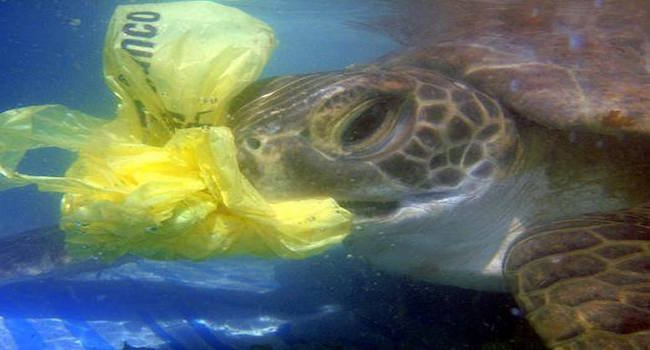
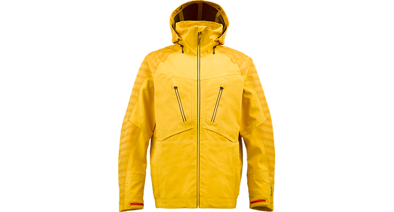
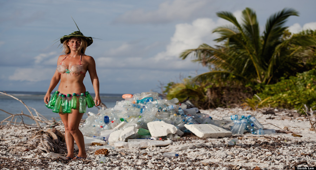

Toggle navigation
Menu
Ocean Rebirth
Ocean Rebirth > News
Back to homepage
Ocean news
Here is the newspage about ocean.
You can find what you want to care about.
Marine Pollution
The oceans are so vast and deep that until fairly recently, it was widely assumed that no matter how much trash and chemicals humans dumped into them, the effects would be negligible.

trash and turtle
Most of it is plastic. And marine life ingests it, with catastrophic consequences.
Ocean clean
Scientists call these statistics the "wow factor" of ocean trash. The tallies, published last year in three separate scientific papers, are useful in red-flagging the scope of the problem for the public.
heatwave
In 1998, a huge underwater heatwave killed 16% of the corals on reefs around the world. Triggered by the El Niño of that year, it was declared the first major global coral bleaching event. The second global bleaching event that struck was triggered by the El Niño of 2010.

Plastic Bottle Trash From The Ocean Into Clothing
The company, whose creative director is recording artist Pharrell Williams, has partnered with several different apparel brands ― including G-Star and O’Neill ― since its founding in 2009 to incorporate its yarn into a variety of products, from denim jeans to snowboarding jackets.

Naked and Afraid
Last year, Alison Teal arrived on a Maldivian island completely naked and ready to do 21 days without food or water for Discovery Channel’s reality show, “Naked and Afraid.” While the world watched Teal survive the scorching hot beach with coconut water and hats made of palm fronds, Teal struggled with something else.
˄
{kind=link}
{kind=link}
{kind=link}
{kind=link}
{kind=link}
{kind=link}